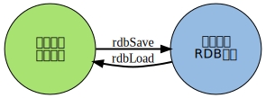

在运行情况下， Redis 以数据结构的形式将数据维持在内存中， 为了让这些数据在 Redis 重启之后仍然可用， Redis 分别提供了 RDB 和 AOF 两种持久化模式。
在 Redis 运行时， RDB 程序将当前内存中的数据库快照保存到磁盘文件中， 在 Redis 重启动时， RDB 程序可以通过载入 RDB 文件来还原数据库的状态。
RDB 功能最核心的是 rdbSave 和 rdbLoad 两个函数，
前者用于生成 RDB 文件到磁盘，
而后者则用于将 RDB 文件中的数据重新载入到内存中：

本章先介绍 SAVE 和 BGSAVE 命令的实现，
以及 rdbSave 和 rdbLoad 两个函数的运行机制，
然后以图表的方式，
分部分来介绍 RDB 文件的组织形式。
因为本章涉及 RDB 运行的相关机制， 如果还没了解过 RDB 功能的话， 请先阅读 Redis 官网上的 persistence 手册 。
rdbSave 函数负责将内存中的数据库数据以 RDB 格式保存到磁盘中，
如果 RDB 文件已存在，
那么新的 RDB 文件将替换已有的 RDB 文件。
在保存 RDB 文件期间， 主进程会被阻塞， 直到保存完成为止。
SAVE 和 BGSAVE 两个命令都会调用 rdbSave 函数，但它们调用的方式各有不同：
rdbSave ，阻塞 Redis 主进程，直到保存完成为止。在主进程阻塞期间，服务器不能处理客户端的任何请求。fork 出一个子进程，子进程负责调用 rdbSave ，并在保存完成之后向主进程发送信号，通知保存已完成。因为 rdbSave 在子进程被调用，所以 Redis 服务器在 BGSAVE 执行期间仍然可以继续处理客户端的请求。通过伪代码来描述这两个命令，可以很容易地看出它们之间的区别：
def SAVE():
rdbSave()
def BGSAVE():
pid = fork()
if pid == 0:
# 子进程保存 RDB
rdbSave()
elif pid > 0:
# 父进程继续处理请求，并等待子进程的完成信号
handle_request()
else:
# pid == -1
# 处理 fork 错误
handle_fork_error()
除了了解 RDB 文件的保存方式之外， 我们可能还想知道， 两个 RDB 保存命令能否同时使用？ 它们和 AOF 保存工作是否冲突？
本节就来解答这些问题。
前面提到过， 当 SAVE 执行时， Redis 服务器是阻塞的， 所以当 SAVE 正在执行时， 新的 SAVE 、 BGSAVE 或 BGREWRITEAOF 调用都不会产生任何作用。
只有在上一个 SAVE 执行完毕、 Redis 重新开始接受请求之后， 新的 SAVE 、 BGSAVE 或 BGREWRITEAOF 命令才会被处理。
另外， 因为 AOF 写入由后台线程完成， 而 BGREWRITEAOF 则由子进程完成， 所以在 SAVE 执行的过程中， AOF 写入和 BGREWRITEAOF 可以同时进行。
在执行 SAVE 命令之前，
服务器会检查 BGSAVE 是否正在执行当中，
如果是的话，
服务器就不调用 rdbSave ，
而是向客户端返回一个出错信息，
告知在 BGSAVE 执行期间，
不能执行 SAVE 。
这样做可以避免 SAVE 和 BGSAVE 调用的两个 rdbSave 交叉执行，
造成竞争条件。
另一方面， 当 BGSAVE 正在执行时， 调用新 BGSAVE 命令的客户端会收到一个出错信息， 告知 BGSAVE 已经在执行当中。
BGREWRITEAOF 和 BGSAVE 不能同时执行：
BGREWRITEAOF 和 BGSAVE 两个命令在操作方面并没有什么冲突的地方， 不能同时执行它们只是一个性能方面的考虑： 并发出两个子进程， 并且两个子进程都同时进行大量的磁盘写入操作， 这怎么想都不会是一个好主意。
当 Redis 服务器启动时，
rdbLoad 函数就会被执行，
它读取 RDB 文件，
并将文件中的数据库数据载入到内存中。
在载入期间，
服务器每载入 1000 个键就处理一次所有已到达的请求，
不过只有 PUBLISH 、 SUBSCRIBE 、 PSUBSCRIBE 、 UNSUBSCRIBE 、 PUNSUBSCRIBE 五个命令的请求会被正确地处理，
其他命令一律返回错误。
等到载入完成之后，
服务器才会开始正常处理所有命令。
Note
发布与订阅功能和其他数据库功能是完全隔离的，前者不写入也不读取数据库，所以在服务器载入期间，订阅与发布功能仍然可以正常使用，而不必担心对载入数据的完整性产生影响。
另外， 因为 AOF 文件的保存频率通常要高于 RDB 文件保存的频率， 所以一般来说， AOF 文件中的数据会比 RDB 文件中的数据要新。
因此， 如果服务器在启动时， 打开了 AOF 功能， 那么程序优先使用 AOF 文件来还原数据。 只有在 AOF 功能未打开的情况下， Redis 才会使用 RDB 文件来还原数据。
前面介绍了保存和读取 RDB 文件的两个函数，现在，是时候介绍 RDB 文件本身了。
一个 RDB 文件可以分为以下几个部分：
+-------+-------------+-----------+-----------------+-----+-----------+
| REDIS | RDB-VERSION | SELECT-DB | KEY-VALUE-PAIRS | EOF | CHECK-SUM |
+-------+-------------+-----------+-----------------+-----+-----------+
|<-------- DB-DATA ---------->|
以下的几个小节将分别对这几个部分的保存和读入规则进行介绍。
一个四字节长的以字符表示的整数，记录了该文件所使用的 RDB 版本号。
目前的 RDB 文件版本为 0006 。
因为不同版本的 RDB 文件互不兼容，所以在读入程序时，需要根据版本来选择不同的读入方式。
这个部分在一个 RDB 文件中会出现任意多次，每个 DB-DATA 部分保存着服务器上一个非空数据库的所有数据。
因为空的数据库不会被保存到 RDB 文件，所以这个部分至少会包含一个键值对的数据。
每个键值对的数据使用以下结构来保存：
+----------------------+---------------+-----+-------+
| OPTIONAL-EXPIRE-TIME | TYPE-OF-VALUE | KEY | VALUE |
+----------------------+---------------+-----+-------+
OPTIONAL-EXPIRE-TIME 域是可选的，如果键没有设置过期时间，那么这个域就不会出现；
反之，如果这个域出现的话，那么它记录着键的过期时间，在当前版本的 RDB 中，过期时间是一个以毫秒为单位的 UNIX 时间戳。
KEY 域保存着键，格式和 REDIS_ENCODING_RAW 编码的字符串对象一样（见下文）。
TYPE-OF-VALUE 域记录着 VALUE 域的值所使用的编码，
根据这个域的指示，
程序会使用不同的方式来保存和读取 VALUE 的值。
Note
下文提到的编码在《对象处理机制》章节介绍过，如果忘记了可以回去重温下。
保存 VALUE 的详细格式如下：
REDIS_ENCODING_INT 编码的 REDIS_STRING 类型对象：
如果值可以表示为 8 位、 16 位或 32 位有符号整数，那么直接以整数类型的形式来保存它们：
+---------+
| integer |
+---------+
比如说，整数 8 可以用 8 位序列 00001000 保存。
当读入这类值时，程序按指定的长度读入字节数据，然后将数据转换回整数类型。
另一方面，如果值不能被表示为最高 32 位的有符号整数，那么说明这是一个 long long 类型的值，在 RDB 文件中，这种类型的值以字符序列的形式保存。
一个字符序列由两部分组成：
+-----+---------+
| LEN | CONTENT |
+-----+---------+
其中， CONTENT 域保存了字符内容，而 LEN 则保存了以字节为单位的字符长度。
当进行载入时，读入器先读入 LEN ，创建一个长度等于 LEN 的字符串对象，然后再从文件中读取 LEN 字节数据，并将这些数据设置为字符串对象的值。
REDIS_ENCODING_RAW 编码的 REDIS_STRING 类型值有三种保存方式：
如果值可以表示为 8 位、 16 位或 32 位长的有符号整数，那么用整数类型的形式来保存它们。
如果字符串长度大于 20 ，并且服务器开启了 LZF 压缩功能 ，那么对字符串进行压缩，并保存压缩之后的数据。
经过 LZF 压缩的字符串会被保存为以下结构：
+----------+----------------+--------------------+
| LZF-FLAG | COMPRESSED-LEN | COMPRESSED-CONTENT |
+----------+----------------+--------------------+
LZF-FLAG 告知读入器，后面跟着的是被 LZF 算法压缩过的数据。
COMPRESSED-CONTENT 是被压缩后的数据， COMPRESSED-LEN 则是该数据的字节长度。
在其他情况下，程序直接以普通字节序列的方式来保存字符串。比如说，对于一个长度为 20 字节的字符串，需要使用 20 字节的空间来保存它。
这种字符串被保存为以下结构：
+-----+---------+
| LEN | CONTENT |
+-----+---------+
LEN 为字符串的字节长度， CONTENT 为字符串。
当进行载入时，读入器先检测字符串保存的方式，再根据不同的保存方式，用不同的方法取出内容，并将内容保存到新建的字符串对象当中。
REDIS_ENCODING_LINKEDLIST 编码的 REDIS_LIST 类型值保存为以下结构：
+-----------+--------------+--------------+-----+--------------+
| NODE-SIZE | NODE-VALUE-1 | NODE-VALUE-2 | ... | NODE-VALUE-N |
+-----------+--------------+--------------+-----+--------------+
其中 NODE-SIZE 保存链表节点数量，后面跟着 NODE-SIZE 个节点值。节点值的保存方式和字符串的保存方式一样。
当进行载入时，读入器读取节点的数量，创建一个新的链表，然后一直执行以下步骤，直到指定节点数量满足为止：
REDIS_ENCODING_HT 编码的 REDIS_SET 类型值保存为以下结构：
+----------+-----------+-----------+-----+-----------+
| SET-SIZE | ELEMENT-1 | ELEMENT-2 | ... | ELEMENT-N |
+----------+-----------+-----------+-----+-----------+
SET-SIZE 记录了集合元素的数量，后面跟着多个元素值。元素值的保存方式和字符串的保存方式一样。
载入时，读入器先读入集合元素的数量 SET-SIZE ，再连续读入 SET-SIZE 个字符串，并将这些字符串作为新元素添加至新创建的集合。
REDIS_ENCODING_SKIPLIST 编码的 REDIS_ZSET 类型值保存为以下结构：
+--------------+-------+---------+-------+---------+-----+-------+---------+
| ELEMENT-SIZE | MEB-1 | SCORE-1 | MEB-2 | SCORE-2 | ... | MEB-N | SCORE-N |
+--------------+-------+---------+-------+---------+-----+-------+---------+
其中 ELEMENT-SIZE 为有序集元素的数量， MEB-i 为第 i 个有序集元素的成员， SCORE-i 为第 i 个有序集元素的分值。
当进行载入时，读入器读取有序集元素数量，创建一个新的有序集，然后一直执行以下步骤，直到指定元素数量满足为止：
memberscore ，并将它转换为浮点数member 为成员、 score 为分值的新元素到有序集REDIS_ENCODING_HT 编码的 REDIS_HASH 类型值保存为以下结构：
+-----------+-------+---------+-------+---------+-----+-------+---------+
| HASH-SIZE | KEY-1 | VALUE-1 | KEY-2 | VALUE-2 | ... | KEY-N | VALUE-N |
+-----------+-------+---------+-------+---------+-----+-------+---------+
HASH-SIZE 是哈希表包含的键值对的数量， KEY-i 和 VALUE-i 分别是哈希表的键和值。
载入时，程序先创建一个新的哈希表，然后读入 HASH-SIZE ，再执行以下步骤 HASH-SIZE 次：
REDIS_LIST 类型、 REDIS_HASH 类型和 REDIS_ZSET 类型都使用了 REDIS_ENCODING_ZIPLIST 编码， ziplist 在 RDB 中的保存方式如下：
+-----+---------+
| LEN | ZIPLIST |
+-----+---------+
载入时，读入器先读入 ziplist 的字节长，再根据该字节长读入数据，最后将数据还原成一个 ziplist 。
REDIS_ENCODING_INTSET 编码的 REDIS_SET 类型值保存为以下结构：
+-----+--------+
| LEN | INTSET |
+-----+--------+
载入时，读入器先读入 intset 的字节长度，再根据长度读入数据，最后将数据还原成 intset 。
标志着数据库内容的结尾（不是文件的结尾），值为 rdb.h/EDIS_RDB_OPCODE_EOF （255）。
RDB 文件所有内容的校验和，
一个 uint_64t 类型值。
REDIS 在写入 RDB 文件时将校验和保存在 RDB 文件的末尾， 当读取时， 根据它的值对内容进行校验。
如果这个域的值为 0 ，
那么表示 Redis 关闭了校验和功能。
rdbSave 会将数据库数据保存到 RDB 文件，并在保存完成之前阻塞调用者。
SAVE 命令直接调用 rdbSave ，阻塞 Redis 主进程； BGSAVE 用子进程调用 rdbSave ，主进程仍可继续处理命令请求。
SAVE 执行期间， AOF 写入可以在后台线程进行， BGREWRITEAOF 可以在子进程进行，所以这三种操作可以同时进行。
为了避免性能问题， BGSAVE 和 BGREWRITEAOF 不能同时执行。
调用 rdbLoad 函数载入 RDB 文件时，不能进行任何和数据库相关的操作，不过订阅与发布方面的命令可以正常执行，因为它们和数据库不相关联。
RDB 文件的组织方式如下：
+-------+-------------+-----------+-----------------+-----+-----------+
| REDIS | RDB-VERSION | SELECT-DB | KEY-VALUE-PAIRS | EOF | CHECK-SUM |
+-------+-------------+-----------+-----------------+-----+-----------+
|<-------- DB-DATA ---------->|
键值对在 RDB 文件中的组织方式如下：
+----------------------+---------------+-----+-------+
| OPTIONAL-EXPIRE-TIME | TYPE-OF-VALUE | KEY | VALUE |
+----------------------+---------------+-----+-------+
RDB 文件使用不同的格式来保存不同类型的值。